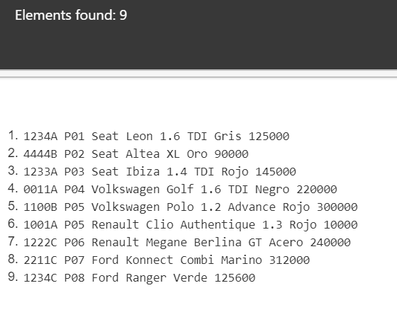
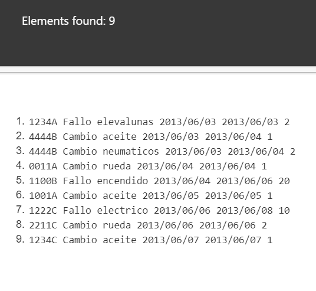

Tomando de referencia el schema y el xml de gimnasio
- Los elementos de cada coche
/garaje/coches/cocheResultado  - Los elementos de cada reparación
/garaje/reparaciones/reparacionResultado  - El contenido de la matricula de los coches
/garaje/coches/coche/matricula/text()Resultado
- Todos los nodos(elementos y contenido) de la marca Renault
/garaje/coches/coche[marca="Renault"]/*Resultado
- Todos los nodos de los coches de mas de 200000 km
/garaje/coches/coche[km>200000]/*Resultado
- El contenido del color del coche de matricula 1234C
/garaje/coches/coche[matricula="1234C"]/color/text()Resultado
- El contenido de la decripcion de las reparaciones realizadas al coche de matricula 4444B
/garaje/reparaciones/reparacion[matricula="4444B"]/descripcion/text()Resultado
- El contenido de la descripcion de la reparacion del codigo J0005
/garaje/reparaciones/reparacion[@codigo="J0005"]/descripcion/text()Resultado
- Suma de las horas invertidas reparando coches
sum(//reparaciones/reparacion/horas)Resultado
- Número de coches en el documento
count(//coches/coche)Resultado
- Selecciona todos los elementos del primer coche
//coche[1]/*Resultado
- Selecciona todos los elementos de la última reparación
//reparacion[last()]/*Resultado
- Selecciona todos los elementos del coche de la marca Seat con color rojo
//coche[marca='Seat' and color='Rojo']/*Resultado
- Propietario del coche modelo Polo 1.2 Advance
Resultado

- Contendio de la descripción de las reparaciones con fecha de entrada 2013/06/06
//reparacion[fecha_entrada='2013/06/06']/descripcion/text()Resultado
- Seleccionar los coches rojos y grises
//coche[color='Gris' or color='Rojo']/node()Resultado
- Contendio de la descripción de las reparaciones con fecha de entrada 2013/06/06
Resultado

- Contendio de la descripción de las reparaciones con fecha de entrada 2013/06/06
Resultado